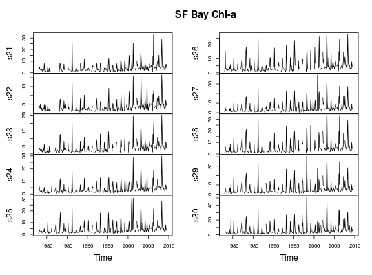

Selected observations and variables from U.S. Geological Survey water quality stations in south San Francisco Bay. Data include and nutrient measurements.
sfbay is a data frame with 23207 observations (rows) of 12
variables (columns):
[, 1] |
date |
| date | [, 2] |
time |
time |
[, 3] |
stn |
| station code |
[, 4] |
depth |
measurement depth |
[, 5] |
chl |
| chlorophyll a | [, 6] |
dox.pct
|
dissolved oxygen |
[, 7] |
spm |
| suspended particulate matter | [, 8] |
ext |
extinction coefficient |
[, 9] |
sal |
| salinity | [, 10]
|
temp |
water temperature |
[, 11] |
nox
|
| nitrate + nitrite | [, 12] |
nhx |
ammonium |
sfbayStns is a data frame with 16 observations of 6 variables:
[, 1] |
site |
| station code | [,
2] |
description |
station description |
[, 3] |
lat |
| latitude | [, 4] |
long |
longitude |
[, 5] |
depthMax |
| maximum depth, in m | [, 6]
|
distFrom36 |
distance from station 36, in km |
sfbayVars is a data frame with 7 observations of 3 variables:
[, 1] |
variable |
| water quality variable code | [, 2] |
description |
description |
[,
3] |
units |
| measurement units | [, 1] |
sfbayChla is a time series matrix (380 months x 16 stations)
of average 0-5 m chlorophyll a concentrations calculated from the
data in sfbay.
Downloaded from http://sfbay.wr.usgs.gov/access/wqdata on 2009-11-17.
The original downloaded dataset was modified by taking a subset of six
well-sampled stations and the period 1985--2004. Variable names were also
simplified. The data frames sfbayStns and sfbayVars describe
the stations and water quality variables in more detail; they were created
from information at the same web site. Note that the station numbers in
sfbayStns have been prefixed with s to make station codes into
legal variable names. sfbayChla was constructed from the entire
downloaded sfbay dataset and encompasses the period 1969--2009.
data(sfbay) str(sfbay)#> 'data.frame': 23207 obs. of 12 variables: #> $ date : chr " 1/23/1985" " 1/23/1985" " 1/23/1985" " 1/23/1985" ... #> $ time : int 1120 1120 1120 1120 1222 1222 1222 1324 1324 1324 ... #> $ stn : num 21 21 21 21 24 24 24 27 27 27 ... #> $ depth: num 1 2 6 12 1 2 9 1 2 12 ... #> $ chl : num 5.6 3.4 3.1 3.4 6.2 5.6 3.3 NA NA NA ... #> $ dox : num NA NA NA NA NA NA NA NA NA NA ... #> $ spm : int 17 17 18 21 17 18 23 18 19 21 ... #> $ ext : num 1.6 1.6 1.6 1.9 1.6 1.6 2 1.6 1.7 1.9 ... #> $ sal : num 28.1 28.6 28.9 29.4 27.4 ... #> $ temp : num NA NA NA NA NA NA NA NA NA NA ... #> $ nox : num NA NA NA NA NA NA NA NA NA NA ... #> $ nhx : num NA NA NA NA NA NA NA NA NA NA ...str(sfbayStns)#> 'data.frame': 16 obs. of 6 variables: #> $ site : Factor w/ 16 levels "s21","s22","s23",..: 1 2 3 4 5 6 7 8 9 10 ... #> $ description: chr "Bay Bridge" "Potrero Point" "Hunter's Point" "Candlestick Point" ... #> $ lat : num 37.8 37.8 37.7 37.7 37.7 ... #> $ long : num -122 -122 -122 -122 -122 ... #> $ depthMax : num 17.4 18 20.1 11 8.8 9.8 13 16.2 14.6 12.8 ... #> $ distFrom36 : Factor w/ 16 levels "0","1.66","10.61",..: 14 13 12 11 10 8 7 6 5 4 ... #> - attr(*, "units")=List of 2 #> ..$ depthMax : chr "m" #> ..$ distFrom36: chr "km"str(sfbayVars)#> 'data.frame': 8 obs. of 3 variables: #> $ variable : Factor w/ 8 levels "chl","dox","ext",..: 1 2 7 3 6 8 5 4 #> $ description: chr "chlorophyll a" "dissolved oxygen" "suspended particulate matter" "extinction coefficient" ... #> $ units : chr "mg/m3" "mg/L" "mg/L" "1/m" ...plot(sfbayChla[, 1:10], main = "SF Bay Chl-a")